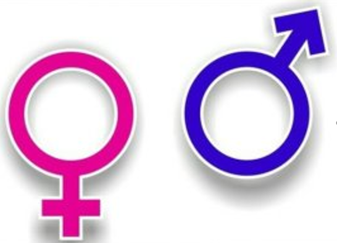

1. 성교육은 어떻게 시작할까요?
생활 속에서 접하는 ‘성’에 대해서 아이 수준에 맞게 자연스럽게 조금씩 가르쳐줘야 한다. 태아 때부터 영유아기를 거쳐 자기 몸을 탐색하던 아이는 자연스럽게 자신과 다른 이성의 몸에 호기심이 생긴다. 보통 만 3세가 넘으면, 자기 성기 또는 다른 사람의 성기에 관심이 발생한다. 그래서 조물락거릴 수도 있고, 남의 것을 보고 싶어 하기도 하는 시기부터 성교육을 시작해야 한다.

2. 아이들의 성 행동은 어른의 자위와 같을까?
아이가 기저귀 안에 손을 넣고, 베개를 다리 사이에 끼우고, 유아차나 카시트 벨트에 자신의 생식기를 비비는 아이, 심지어 땀까지 뻘뻘 흘리며 집중하는 모습은 영락없이 어른의 자위행위와 닮았다. 티 없이 순수한 우리 아이의 특이행동, 우리 아이만 유난히, 빨리 느끼는 걸까? 하지만 국내 한 성교육 상담센터의 자녀 성 상담 통계에 따르면 성 상담 항목 1위는 ‘유아자위’였으며 만 3세에서 6세 대부분 4세가 높은 상담 건수를 보였다.
1) 생활 속에서 접하는 ‘성’에 대해서 아이 수준에 맞게 자연스럽게 조금씩 가르쳐주도록 한다.
남자는 남자 화장실, 여자는 여자 화장실부터 -남자 아이는여자 화장실에 들어가지 않는 것부터 가르쳐야 한다.
엄마가 데리고들어올 수 밖에 없는 상황이라면 아들에게 여기는 여자들이 사용하는 곳인데 너는 아직 보호해야 하기 때문에 여자화장실에 데리고 들어온 것인데, 좀 더 크면 남자 화장실로 가야 한다는 점을 말해준다.
2) 아빠와 같이 외출했다면, 어려도 아들은 아빠가 데리고 화장실에 가야 한다.
대중목욕탕도 아들은 아빠가 데려가는 것이 좋다. 어쩔 수 없을 때는유연하게 상징적으로 성에는 구별이 있음을 안내하거나 가르치고 적용하도록 대처한다. 이런 작은 성 행동들이 자아조절력을 강화시켜 성에는 구별이 있다는 자신감이 형성된다.
3) 화장실이 하나 밖에 없는 어린이집이라면, 남자 아이들 여자 아이들이 따로 가도록 하는 것이 좋다.
순서를 정해서 “오늘은 여자 친구들이 먼저 화장실에 다녀오기” 하고 다음날은 남자 아이들이 먼저 이용하도록 안내한다. 그래야 아이들은 누가 들여다 봤어요”라는 일이 생기지 않게 될 것이다. 성은 차별이 아니라 성기의 구조가 다르고 역할이 다르기 때문에 구별을 가르치는 것이 원칙이다.
3) 집에서 하는 아이 목욕은 엄마가 할 때가 많다.
영아기는 부모에 의한 조절이 필요하지만 만3세가 되면서 목욕하기 전 속옷은 화장실 안에서 입고 벗도록 훈련한다. 엄마 몸을 자연스럽게 보여주면서 가슴, 배, 성기부분은 굉장히 소중한 곳이므로 보호하도록 강화시킨다. 부모는 등이나 머리감을 때 도와주되 앞부분과 성기부분은 스스로 씻고 스스로 닦도록 가르친다.
3. 신체부위의 안전성을 강조한다.
배꼽에 대해서는 “네가 엄마 뱃속에 있을 때 엄마 몸이랑 연결되었던 곳이야. 아기는 엄마 양수 안에서 살거든. 배꼽을 통해서 영양분을 공급받아. 무척 소중한 곳이지? 파면 안 돼. 파다보면 손이 깨끗하지 않아서 염증이 생길 수 있어. 그러면 배가 아야 해. 이 정도만 쓰윽 닦아주면 된단다.”라고 알려주세요.
남자 아이들의 성기에 대해서도 “쉬할 때 여기에서 오줌이 나오잖아. 오줌은 너무너무 중요한 거야. 우리가 먹는 음식, 물 등이 콩팥이라는 곳을 거쳐서 그 중 나쁜 것들만 오줌으로 빠져나오는 거거든. 오줌을 못 싸면 큰일 나. 병원 가서 관을 넣어서 빼줘야 돼. 응가도 먹는 것만큼 중요해. 모두 소중하게 관리해야 돼. 자꾸 조물락조물락 하지 말아야 되는 거야”라고 가르쳐 주세요.
4. 사회 안에서 허용되는 행동과그렇지 않은 행동을 알려줘야 한다.
성추행과 실수, 가까운 사람과의 스킨십은 구분해야 아이들은 괜찮은데 성교육을 할 때 조심해야 할 점 때문에 친근한 사람 사이의 스킨십과 모르는 사람이 나쁜 의도를 가지고 만지는 것을 꼭 구별해해 한다. 성에는 가해자, 피해자가 따로 구분되지 않는다. 만약 아이들이 왜? 라고 물어본다면 원래 남의 몸은 만지면 안 된다는 것 특히 팬티 안의 것은 우리 모두가 지켜야 하는 규칙임을 인지시켜줘야 할 핑요성이 있다. 성은 절대로 저절로 알게 되는 것이 아니므로 정확하게 자연스럽게 가르쳐줘야 한다.